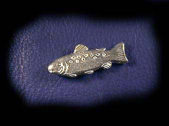

Konstsmide - Tenn
Den här smidiga silvervita metallen oxiderar inte med syre vilket gör att den används för att skydda andra metaller mot korrosion med en tennbeläggning. Tenn är en av de metaller som är kända av människan sedan antiken, då det mjuka tennet hade stor betydelse med den även mjuka kopparn, då de tillsammans bildar den hårda legeringen brons. Tenn utvinns framförallt ur mineralet tennsten (kassiterit).
Vid utformning och dekorering finns olika tillvägagångssätt. Den i äldre tider vanligaste och ännu förekommand tekniken är drivning, där man formar föremålet med hammare, s.k. korpusarbete. Genom drivning i kombination med ciselering kan man också utforma en dekor. Pressning utförs i stansar av stål eller brons. Gjutning sker både i sandformar och enligt vaxmetoden. Tryckning sker i en svarv, där plåten av ädelmetall spänts fast mot en trä- eller metallmodell, s. k. patron mot vilken ett blankt tryckstål under rotation formar föremålet. Hopfogning utförs genom lödning.